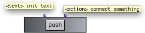

OpenMusic DocumentationHiérarchie de section : OM 6.6 User Manual > Visual Programming II > Interface Boxes > Button
OpenMusic DocumentationHiérarchie de section : OM 6.6 User Manual > Visual Programming II > Interface Boxes > Button
Navigation : page précédente | page suivante
Attention, votre navigateur ne supporte pas le javascript ou celui-ci à été désactivé. Certaines fonctionnalités de ce guide sont restreintes.
Triggering Operations : The Button Box
Button boxes are used for triggering operations. They don't return anything.
When the button is pressed, an action is executed.
Features

|
The button box has two inputs
|
When the button is pushed, the Listener displays the value returned by the box connected to the second input.
Reminder
Displaying and Editing the Button Box Interface
A Basic Example
Any box or part of a patch to be evaluated by pushing the button can be connected to the second input. |

|
A Musical Application : an Extended Example
Building a Triad with an Item-List-Box, a Button-Box, and a Check Box
Références :
Plan :
Navigation : page précédente | page suivante
A propos...(c) Ircam - Centre Pompidou